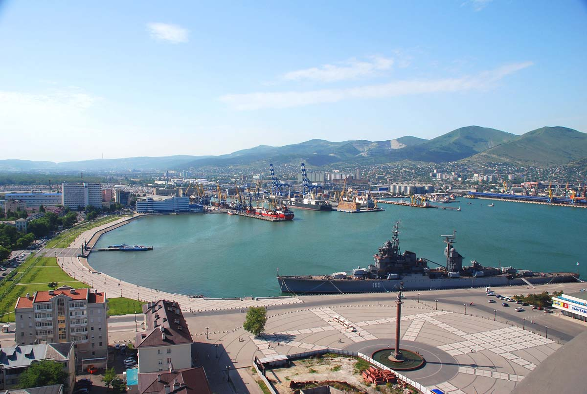
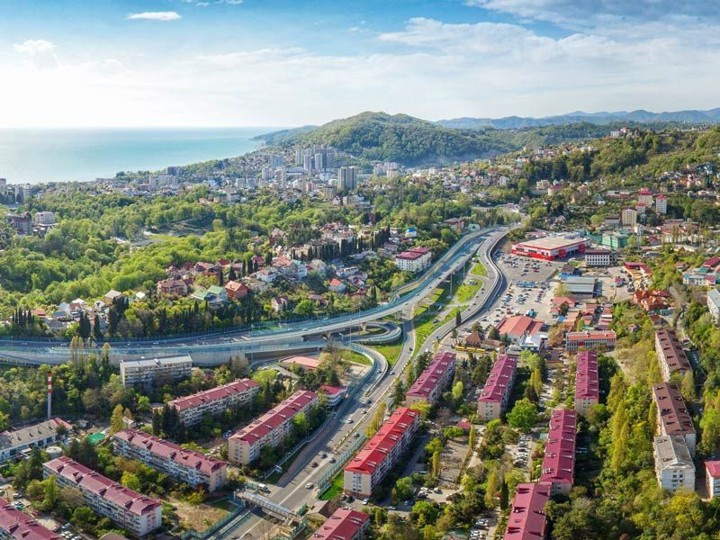
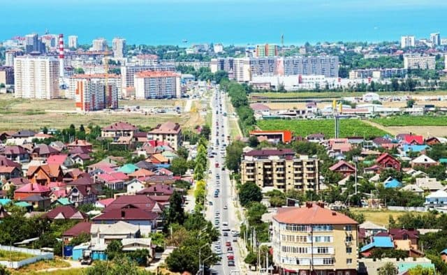
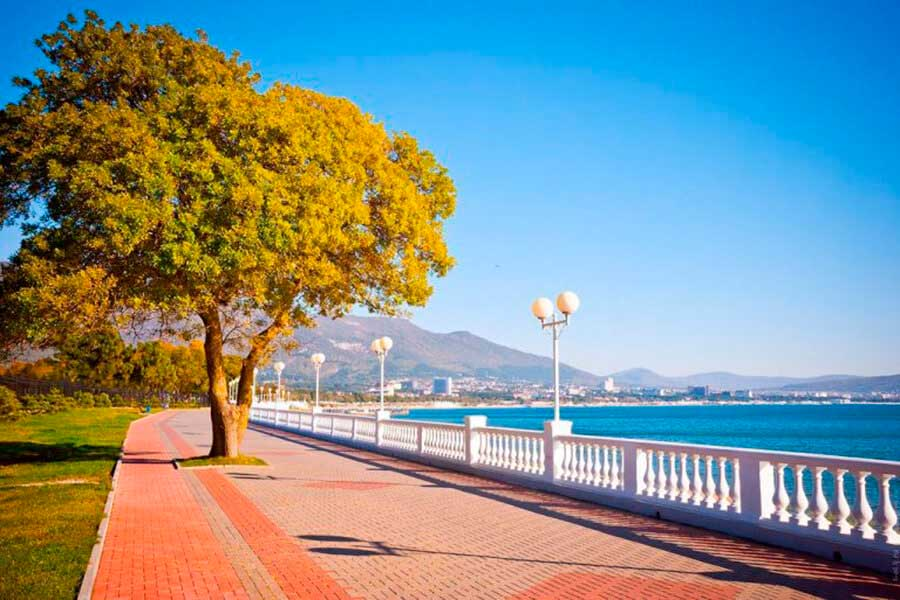

Новороссийск
Новороссийск – красивый южный город расположенный на юго-востоке Краснодарского края, на берегу Цемесской (Новороссийской) бухты Черного моря. Город является крупнейшим торговым портом России. Но несмотря на то, что город является промышленным, он активно проявляет себя в роли города-курорта. Туристическая инфраструктура здесь активно развивается. В городе присутствует прекрасная большая набережная протяженностью 2300 метров. На данной набережной расположены различные кафе, рестораны, фонтаны, детские площадки, памятники и скульпутры. Самыми знаменитыми памятниками города является мемориальный комплекс "Малая Земля" и корабль-музей "Адмирал Нахимов", так как они посвящены событиям Великой Отечественной войны. Вблизи города находятся поселки, в которых расположено множество виноградников, из чего потом и производят вина и шампанское в местных заводах Абрау-Дюрсо и Мысхако. Туристические агентства и частные гиды организуют специальные экскурсии в эти прекрасные места. Отправившись в такой тур, можно узнать, как изготовляют прекрасные напитки, побывать в старинных сводчатых подвалах, где хранятся бочки с винами, и ознакомиться с их вкусом в дегустационных залах.
Сочи
Сочи – курортный город, расположенный на Черноморском побережье Краснодарского края.Граничит с Абхазией. Сочи является одним из популярных городов-курортов, так как именно сюда приезжают на отдых большинство проживающих в России. Отдых в Сочи является достаточно дорогим удовольствием (дешевле будет слетать в другую страну), но именно этим Сочи и притягивает отдыхающих, так как можно отдохнуть в пределах своей страны с удовольствием. Как говорят: "Кто не может себе позволить отдых в Сочи - летит заграницу". В Сочи имеется Сочи-парк, различные стадионы (Фишт и другие), на которых проходила в далёком 2014 году XXII Зимняя Олимпиада. Сейчас на стадионе Фишт проходят гонки Формулы-1, что является также немаловажным фактором для привлечения в город отдыхающих. В окрестностях Сочи есть горнолыжный курорт "Красная Поляна", на которую регулярно приезжают отдыхать Президент и Премьер-Министр Российской Федерации. Однозначно, Сочи должен посетить каждый проживающий в России человек, ведь в городе очень высоко развита инфраструктура, да и просто от одного вида на море дух заватывает!
Анапа
Анапа — это один из самых знаменитых российских городов-курортов, расположившийся на побережье Чёрного моря. Анапа является семейным курортом, который предпочитают родители с детьми. В городе имеется множество различных санаториев, в которых можно не только отдохнуть, но и поправить здоровье.Анапа — идеальное место для детского отдыха, ведь здесь есть все для маленьких туристов — безопасный спуск в море, песчаные пляжи, множество детских площадок, игровых комнат, парк аттракционов, шоу дельфинов, для детей устраиваются спектакли и различные развлекательные мероприятия. Недалеко от Анапы находится полуостров Крым, на который можно попасть либо на машине, либо взяв экскурсию в то или иное место города. Помимо всего вышесказанного, можно съездить на косу Тузла. Это место разделяет два моря:с одной стороны располождено Азовское море, а с другой стороны-Чёрное. Единственный минус отдыха в Анапе - это довольно часто грязное море, из-за ветра и волн все водоросли и другая морская трава всплывает и купаться невозможно, но несмотря на это, отдых в Анапе является одним из запоминающихся.
Геленджик
Геленджик – солнечный курортный город на Черноморском побережье Краснодарского края России, расположенный вокруг обширной бухты, защищенной горами. Самой главной достопримечательностью окрестностей Геленджика являются каменные дольмены, загадочные сооружения из многотонных грубо обтесанных плит. Набережная Геленджика занимает первое место в книге Рекордов Гиннеса, как самая длинная набережная в мире. Её протяженность составляет 14 километров. На набережной расположено множество памятников, фонтанов, кафе и ресторанов. Также присутствует пляж, на котором все удобно сделано для людей. Недалеко от набережной расположен Сафари-парк, который находится в горах. Помимо всего вышесказанного, недалеко от города есть водопады, на которые можно съездить в качестве экскурсии. В 17 километрах от города, в селе Прасковеевка расположен всем знаменитый памятник "скала Парус". Для впечатлительных людей, которые ни разу не видели подобного, это будет очень запоминающийся отдых, так как можно не только отдохнуть, но и увидеть различные памятники, которые создали не люди,а сама природа. Также, город славится тем, что в нём проходили съемки всем знаменитого фильма "Горько".
Краснодарский край является лучшим местом для отдыха, ведь можно каждый день наслаждаться различными видами в каждом городе края, при этом такой отдых не только не ударит по вашему кошельку, но и принесет множество положительных впечатлений и кучу адреналина (если конечно Вы - любитель экстрима!)